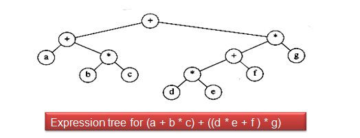
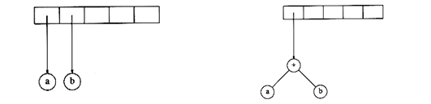
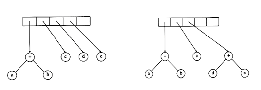
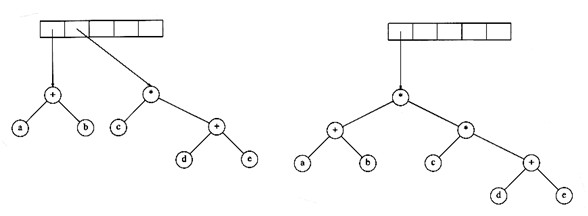

3.3 Expression tree
- Expression tree is a binary tree in which leaves represents operands, such as variables and constant names and other node contains operators.
- The inorder, postorder, preorder traversal of expression tree will produce infix, postfix and prefix notation for the expression under consideration.

Constructing Expression Trees From Postfix
- Read give expression one symbol at a time.
- If the symbol is an operand, we create a one-node tree and push a pointer to it onto a stack. (stack contains tree nodes)
- If the symbol is an operator, pop pointers to two trees T1 and T2 from the stack (T1 is popped first)
- Now form a new tree whose root is the operator and whose left and right children point to T2 and T1 respectively.
- Push a pointer to this new tree onto the stack.
- Repeat this till the last symbol and final the constructed expression tree will alone be remaining in the stack.
Input : a b + c d e + * *
- The first two symbols are operands, so we create one-node trees and push pointers to them onto a stack.
- Next, a '+' is read, so two pointers to trees are popped. (T1 - b, T2 - a)
- A new tree is formed with + as the root and T2 as left child and T1 as right child, and a pointer to it is pushed onto the stack

- Next, c, d, and e are read, and for each a one-node tree is created and a pointer to the corresponding tree is pushed onto the stack.
- After + is read, the tree will be

- Continuing this, '*' is read, so we pop two tree pointers and form a new tree with a '*' as root.
- Finally, the last symbol is read, two trees are merged, and a pointer to the final tree is left on the stack.
